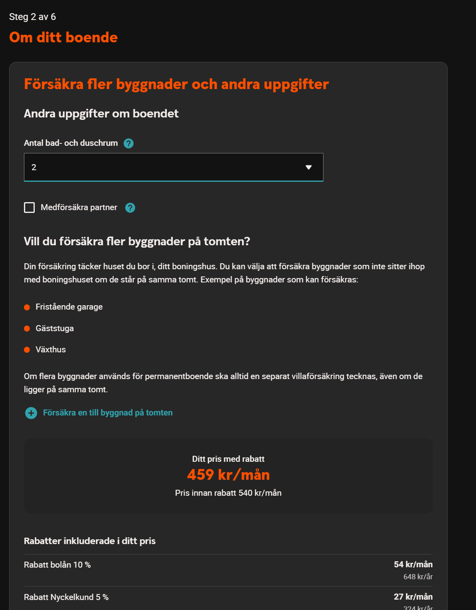
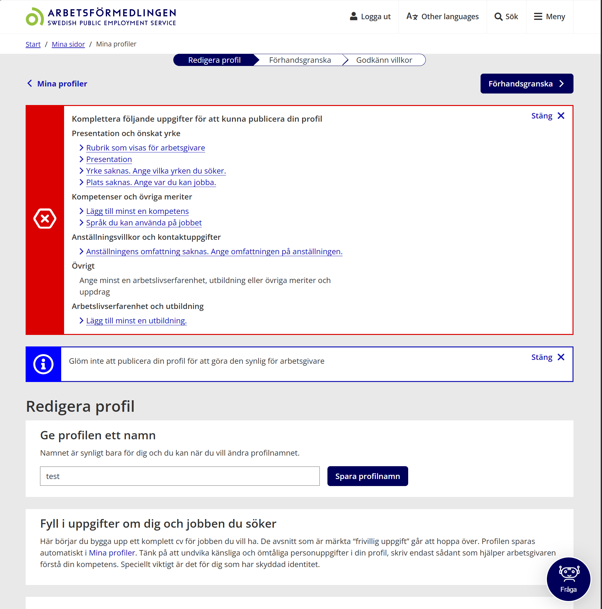

a11y i praktiken
- Arbetsförmedlingen (2019)
- SEB (2022)
- Swedbank (2025)
Varför
- Lagkrav
- Affär
- Kvalitet
- Risk
Vad är tillgänglighet?
Att alla kan använda tjänsten
Oavsett:
- Syn
- Motorik
- Kognition
- Teknik
Vem är det för?
- Sensoriska funktionsnedsättningar
- Motoriska funktionsnedsättningar
- Kognitiva och neuropsykiatriska funktionsnedsättningar
- Äldre personer
- Tillfälliga funktionsnedsättningar
- Situationsbaserade begränsningar
Hur många berörs?
1 av 6 globalt har funktionsnedsättning
~10 % dyslexi
20 % beroende av a11y
upp till 70 % påverkas
Reality check
- man inte kan logga in utan mus
- prisändringar inte annonseras
- knappar inte går att aktivera med Enter
- användaren hamnar "bakom" en modal
WCAG
Version
- WCAG 2.0 (2008)
- WCAG 2.1 (2018)
- WCAG 2.2 (2023)
-Perceivable
-Operable
-Understandable
-Robust
Nivå
- A – grundläggande krav
- AA – standardnivå
- AAA – avancerad nivå
DOS
Lagen om tillgänglighet till digital offentlig service
- Myndigheter
- Kommuner och regioner
- Offentligt finansierade aktörer
- Vissa privata aktörer som utför offentlig tjänst
EAA
European Accessibility Act
EAA - privat sektor
ex
- Banker
- E-handel
- Transport
- Digitala tjänster och produkter
ex där det inte gäller
- Interna system
- Företag som inte erbjuder tjänster till konsumenter
- Vissa mycket små företag
PTS
Post- och telestyrelsen
- Tillsynsmyndighet i Sverige
- Ansvarar för att DOS-lagen följs
Rubrikstruktur
- h1 = sidans huvudrubrik
- h2 = sektioner
- h3 = undersektioner
Alt-texter
- ha en meningsfull alt-text
- eller vara dekorativa
- Dekorativa bilder ska inte läsas upp
- aria-hidden används för att dölja innehåll helt
Fokusordning / fokus försvinner
Tangentbord fungerar inte
Semantik / fel element
- Tex knappar Swedbank
- Name, Role, Value
- t.ex. <div onclick="submit()">Skicka</div>
Dynamiskt innehåll annonseras inte

Formulärproblem
- Användaren kan inte förstå vad som ska fyllas i
- Eller får inte veta vad som är fel

Kontrastproblem
- Text eller UI syns inte tillräckligt tydligt mot bakgrunden
Länkar/knappar saknar tydlig betydelse
- <a href="/article">Läs mer</a>
- <button> 🔍 </button>
Verktyg & test
- Automatiska verktyg inte räcker
- Lighthouse
- Wave
- Nvda
- Jaws
- VoiceOver
- Manuella tester
- Tabba igenom sidan
- Använd bara tangentbord
- Testa formulär
- Öka Storek på text och element
- Använd tjänsten med endast skärmläsare
Hur jobbar man med tillgänglighet?
I utveckling
- Använd native HTML
- Säkerställ tangentbordstöd
- Hantera fokus korrekt
- Använd semantik
I design
- Säkerställ tillräcklig kontrast
- Tydliga interaktioner
- Information ska inte bara ges visuellt
- Tänk på struktur och rubriker
I test
- Testa med tangentbord
- Testa formulär
- Använd screen reader
- Kombinera auto + manuella tester